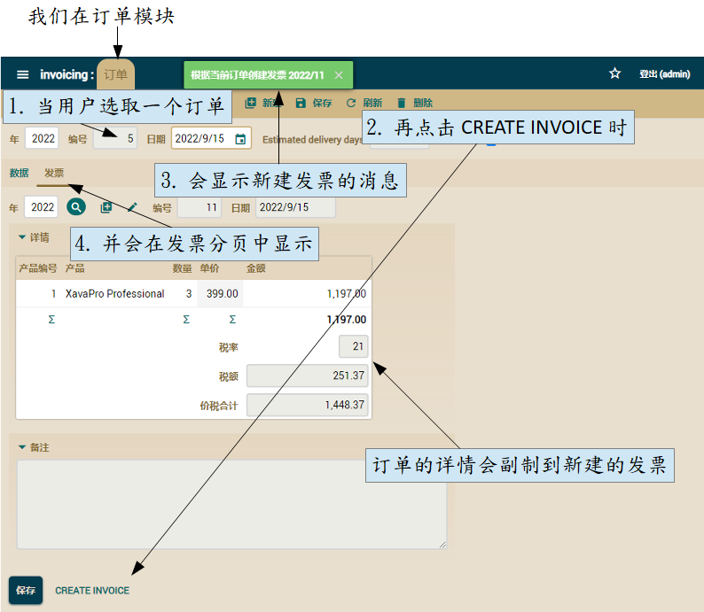
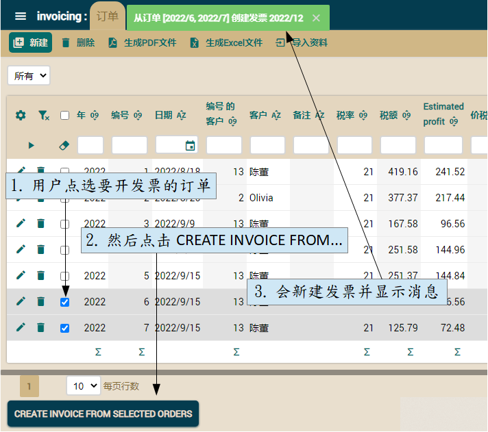

课程：1. 入门教学 |
2. 基本域模型（上） |
3. 基本域模型（下） |
4. 优化用户界面 |
5. 敏捷开发 |
6. 映射式超类继承 |
7. 实体继承 |
8. 视图继承（View） |
9. Java 属性 |
10. 计算属性 |
11. 用在集合的 @DefaultValueCalculator |
12. @Calculation 和集合总计 |
13. 从外部文件的 @DefaultValueCalculator |
14. 手动更改 schema |
15. 多用户时默认值的计算 |
16. 同步持久属性和计算属性 |
17. 从数据库中的逻辑 |
18. 使用 @EntityValidator 进行验证 |
19. 验证替代方案 |
20. 删除时验证 |
21. 自定义 Bean Validation 注解 |
22. 在验证中调用 REST 服务 |
23. 注解中的属性 |
24. 改进标准行为 |
25. 行为与业务逻辑 |
26. 参照与集合 |
A. Architecture & philosophy |
B. Java Persistence API |
C. Annotations |
D. Automated testing
OpenXava 不仅仅是一个用于 CRUD 的框架，而是用于开发成熟业务应用程序的框架。到目前为止，我们已经学到如何创建和优化应用程序以用于管理数据。我们现在将提供用户执行特定业务逻辑的可能性，来进一步改进应用程序。
在本章，我们将了解如何在模型编写业务逻辑并从自定义的动作调用它们。由此，您可以将一个管理数据的应用程序转变为用户在日常工作中非常好使的工具。
详细模式的业务逻辑
我们将从最简单的情况开始：在详细模式中执行某逻辑的按钮。在这里，我们将添加一个从订单创建发票的按钮：

以上显示了此动作如何使用当前订单创建发票，它只是将订单中的数据包括详细信息都复制到新的发票里。之后会显示一条消息，而在订单中的发票分页将显示刚创建的发票。让我们看看如何实现这一点。
创建执行自定义逻辑的动作
正如您所知道的，在模块使用自定义动作的第一步是为该动作定义一个控制器。让我们在 controllers.xml 添加一个新的控制器。以下可看 Order 控制器的代码：
<controller name="Order">
<extends controller="Invoicing"/> <!-- 为了有基本的动作 -->
<action name="createInvoice" mode="detail"
class="com.yourcompany.invoicing.actions.CreateInvoiceFromOrderAction"/>
<!-- mode="detail" : 仅在详细模式下 -->
</controller>
由于我们遵循在控制器使用与实体和模块相同的名称，因此您能在 Order 使用这新动作。Order 控制器从 Invoicing 控制器扩展。还记得我们在上一章创建了 Invoicing 控制器吗，它是从 Typical 控制器改进的。
现在我们必须为这个动作编写 Java 代码：
package com.yourcompany.invoicing.actions; // 在 actions 包
import org.openxava.actions.*;
import com.yourcompany.invoicing.model.*;
public class CreateInvoiceFromOrderAction
extends ViewBaseAction { // 用于使用 getView()
public void execute() throws Exception {
Order order = (Order) getView().getEntity(); // 视图中显示的订单实体 (1)
order.createInvoice(); // 真正的工作委托给实体 (2)
getView().refresh(); // 为了在“发票”分页中看到新建的发票 (3)
addMessage("invoice_created_from_order", // 确认信息 (4)
order.getInvoice());
}
}
真的很简单。我们在获得 Order 实体后(1)，调用 createInvoice() 方法 (2)，之后刷新视图 (3) 并显示一条消息 (4)。可以看到，动作只是视图（用户界面）和模型（业务逻辑）间的中介。
记得将以下消息添加到 src/main/resources/i18n 文件夹中的 invoicing-messages_zh.properties：
invoice_created_from_order=根据当前订单创建发票 {0}
然而，这条消息并没有很好地显示，因为我们是传递了一个 Invoice 对象作为参数。所以我们需要一个对用户有用的 Invoice 和 Order toString()。我们将覆盖 CommercialDocument（Invoice 和 Order 的父级）的 toString() 来实现这一点。你可以在这里看到这个 toString() 方法：
abstract public class CommercialDocument extends Deletable {
...
public String toString() {
return year + "/" + number;
}
}
年份和数字非常适合从用户角度识别发票或订单。
让我们看看缺少的部分， Order 实体的 createInvoice() 方法。
将真正的业务逻辑编写在实体中
创建新发票的业务逻辑在 Order 实体中定义，而不是在动作中。自然得这么做，因为面向对象的基本原则是对象不仅仅是数据，而是数据和逻辑。一个漂亮的代码，它的对象里也都包含管理该对象数据的逻辑。如果您的实体仅仅是数据的容器（数据库表一个简单的包装），而您的动作包含它们的所有逻辑，那么您的代码就是在亵渎面向对象的原则。
除了精神上的原因，将创建发票的逻辑放在 Order 实体中是一种非常实用的方法，因为这样我们可以从其它动作、批量处理、Web 服务等使用这个逻辑。
让我们看看 Order 中的 createInvoice() 代码：
public class Order extends CommercialDocument {
...
public void createInvoice() throws Exception { // throws Exception 只是为了在目前有更简单的代码
Invoice invoice = new Invoice(); // 实例化发票 (1)
BeanUtils.copyProperties(invoice, this); // 并从当前订单复制 (2)
invoice.setOid(null); // 让 JPA 知道这个实体还不存在
invoice.setDate(LocalDate.now()); // 新发票的日期是今天
invoice.setDetails(new ArrayList<>(getDetails())); // 克隆详情集合
XPersistence.getManager().persist(invoice);
this.invoice = invoice; // 总是在 persist() 之后(3)
}
}
此逻辑就是创建一个新的 Invoice 对象 (1)、将数据从当前的 Order 中复制到它 (2) 并将成果实体给当前 Order 中的发票引用 (3)。
这里有三个微妙的细节。首先，您必须编写 invoice.setOid(null)，否则新的 Invoice 将与原 Order 获得相同的编号。此外，JPA 不喜欢使用自动生成并预先填充的 id 作为持久化对象。其次，您必须在调用 persist（发票）后将新的发票分配给当前订单（this.invoice = invoice），否则您会从 JPA 收到错误（类似于 “object references an unsaved transient instance”。第三，我们必须用 new ArrayList() 包装 details 集合，所以它是一个新集合但具有相同的元素，因为 JPA 不希望将相同的集合分配给两个实体。
使用 Apache Commons BeanUtils 以编写更少的代码
您可以看到我们如何使用 BeanUtils.copyProperties() 将所有属性从当前订单复制到新的发票。此方法将所有相同名称的属性从一个对象复制到另一个对象，即使这些对象属于不同的类。这程序来自 Apache 的 Commons BeanUtils。此实用程序的 jar commons-beanutils.jar 已包含在您的项目中。
以下展示了为何 BeanUtils 能让您编写更少的代码：
BeanUtils.copyProperties(invoice, this);
// 如编写这些一样
invoice.setOid(getOid());
invoice.setYear(getYear());
invoice.setNumber(getNumber());
invoice.setDate(getDate());
invoice.setDeleted(isDeleted());
invoice.setCustomer(getCustomer());
invoice.setVatPercentage(getVatPercentage());
invoice.setVat(getVat());
invoice.setTotalAmount(getTotalAmount());
invoice.setRemarks(getRemarks());
invoice.setDetails(getDetails());
不过，使用 BeanUtils 的主要优点不是节省编写的时间，而是让您的代码对更改更具弹性。因为，如果您添加、删除或重命名 ComercialDocument（Invoice 和 Order 的父级）的某些属性时，则无需更改代码也能继续运行，而如果您手动复制属性，则必须手动更改那些代码。
运行时的异常
请记住这句话：“证明规则的异常”。规则、生活和软件都充满了异常。我们的 createInvoice() 方法也不例外。我们已经编写了在最常见情况下工作的代码。但是，如果订单还没有准备好开发票，或者访问数据库时出现问题时会发生什么？显然，在这些情况下，我们需要采取不同的路径。
也就是说，我们在 createInvoice() 编写的 throws Exception 不足以应对更细节的行为。所以应该使用我们自己的异常：
package com.yourcompany.invoicing.model; // 在 model 模型包中
import org.openxava.util.*;
public class CreateInvoiceException extends Exception { // 不是 RuntimeException
public CreateInvoiceException(String message) {
// XavaResources 是从 i18n 条目的 id 获得消息
super(XavaResources.getString(message));
}
}
现在我们可以在 Order 的 createInvoice() 方法中使用我们的 CreateInvoiceException 而不是 Exception：
public void createInvoice()
throws CreateInvoiceException // 应用程序异常 (1)
{
if (this.invoice != null) { // 如果发票已经存在，我们无法创建新的
throw new CreateInvoiceException(
"order_already_has_invoice"); // 允许一个 i18n id 作为参数
}
if (!isDelivered()) { // 如果订单未送达，我们无法创建发票
throw new CreateInvoiceException("order_is_not_delivered");
}
try {
Invoice invoice = new Invoice();
BeanUtils.copyProperties(invoice, this);
invoice.setOid(null);
invoice.setDate(LocalDate.now());
invoice.setDetails(new ArrayList<>(getDetails()));
XPersistence.getManager().persist(invoice);
this.invoice = invoice;
}
catch (Exception ex) { // 任何意外异常 (2)
throw new SystemException( // 将抛出运行时异常 (3)
"impossible_create_invoice", ex);
}
}
现在我们明确的声明此方法该抛出哪个异常 (1)。应用程序异常是经过检查的异常，也就是虽然它的行为特殊但在预期内。应用程序异常与方法的业务逻辑有关。您可以为每个可能的情况创建应用程序异常，例如 OrderAlreadyHasInvoiceException 和 OrderNotDeliveredException。这使您能够使用代码去以不同的方式处理每种异常情况。但我们并不需要，所以我们在这模块使用通用的应用程序异常 CreateInvoiceException。
此外，我们必须处理意想不到的问题 (2)。意外问题有可能是系统错误（数据库访问、网络或硬件问题）或程序员的错误（NullPointerException、IndexOutOfBoundsException 等）。当我们发现任何意外问题时，我们会抛出运行时异常（RuntimeException）(3)。在这个例子为了方便，我们抛出了 SystemException，一个 OpenXava 包含的运行异常，但您可以抛出任何想要的运行时异常。
您无需修改动作代码。如果您的动作不捕获异常，OpenXava 会自动执行。它会向用户显示来自应用程序异常的消息，对于运行时异常会显示通用的错误消息，并停止。
我们必须在 i18n 文件中添加用于异常的消息。请在 src/main/resources/i18n 文件夹中的 invoicing-messages_zh.properties 文件中添加以下：
order_already_has_invoice=订单已有发票
order_is_not_delivered=订单未送达
impossible_create_invoice=无法创建发票
在开发人员中一直存在关于在 Java 中异常的正确使用方法的争论。本节使用的方法的在 Java Enterprise 世界中处理异常的经典方法。
在动作中验证
通常验证的最佳位置是在模型，也就是在实体。但是，有时需要将验证逻辑放在动作中。例如，如果要获取用户界面的当前状态，则必须从动作进行验证。
在我们的例子中，如果用户在创建一个新订单时点击了 CREATE INVOICE，但是这个订单还没有被保存，它将会失败。原因是因为不能从不存在的订单去创建发票。因此用户必须先保存订单。
为此，我们在 CreateInvoiceFromOrderAction 的 execute() 方法的开头添加一个条件，以验证当前显示的订单是否已保存：
public void execute() throws Exception {
// 添加下一个条件
if (getView().getValue("oid") == null) {
// 如果 oid 为 null，代表当前订单尚未保存 (1)
addError("impossible_create_invoice_order_not_exist");
return;
}
...
}
此验证会查看 oid 是否为空 (1)，当用户正在输入新订单，但他尚未保存时 oid 是空的。在这种情况下，会显示一条消息，并且发票的创建将被中止。
这里我们还有一条消息要添加到 i18n 文件中。请编辑 src/main/resources/i18n 文件夹中的 invoicing-messages_zh.properties 文件，添加以下条目：
impossible_create_invoice_order_not_exist=无法创建发票：订单尚不存在
验证会告诉用户他做错了什么。这当然是必要的，但更好的是创建一个能帮助用户避免任何错误行为的应用程序。让我们在下一节中看看如何做的一种方法。
使用 OnChange 事件来隐藏/显示一个动作
我们当前的代码足够防止用户因失误而破坏数据。但我们将更进一步，防止用户失误。如果订单不应该开发票时，我们将隐藏创建新发票的动作。
OpenXava 允许自动隐藏和显示动作。也允许用户在界面更改某些属性时，自动执行某此动作。我们可以使用这两种技术仅在准备好使用时才显示动作的按钮。
请记住，仅当订单已送达且还没有发票时，才能从订单中生成发票。因此，我们必须监控订单实体的 invoice 引用和 delivered 属性的变化。首先，我们将使用以下代码创建一个动作来显示或隐藏从订单中创建发票的动作 ShowHideCreateInvoiceAction：
package com.yourcompany.invoicing.actions; // 在 actions 包
import org.openxava.actions.*; // 因为需要使用 OnChangePropertyAction
public class ShowHideCreateInvoiceAction
extends OnChangePropertyBaseAction { // 因为需要 @OnChange 动作(1)
public void execute() throws Exception {
if (isOrderCreated() && isDelivered() && !hasInvoice()) { // (2)
addActions("Order.createInvoice");
}
else {
removeActions("Order.createInvoice");
}
}
private boolean isOrderCreated() {
return getView().getValue("oid") != null; // 从视图中读取值
}
private boolean isDelivered() {
Boolean delivered = (Boolean)
getView().getValue("delivered"); // 从视图中读取值
return delivered == null?false:delivered;
}
private boolean hasInvoice() {
return getView().getValue("invoice.oid") != null; // 从视图中读取值
}
}
然后我们用 @OnChange 注解 invoice 和 delivered，因此当用户在界面中更改 delivered 或 invoice 的值时，将执行 ShowHideCreateInvoiceAction：
public class Order extends CommercialDocument {
...
@OnChange(ShowHideCreateInvoiceAction.class) // 添加这个
Invoice invoice;
...
@OnChange(ShowHideCreateInvoiceAction.class) // 添加这个
boolean delivered;
...
}
ShowHideCreateInvoiceAction 是一个带有 execute() 方法的常规动作，不过它还从 OnChangePropertyBaseAction 扩展(1)。所有使用 @OnChange 注解的动作都必须实现 IOnChangePropertyAction，但是从已实现它的 OnChangePropertyBaseAction 扩展会容易些。从此动作，您可以使用 getNewValue() 和 getChangedProperty()，尽管在这例子我们不会用到它们。
execute() 方法是询问显示的订单是否已保存、已交付并且还没有发票 (2)，若都是，它会使用 addActions("Order.createInvoice") 显示该动作，相反它则会使用 removeActions 隐藏该动作（“Order.createInvoice”）。因此，我们仅在适用时显示 Order.createInvoice 动作。 add/removeActions() 方法允许指定显示或隐藏多个动作，它们得以逗号分隔。
现在，当用户点击 delivered 选框或选择发票时，将显示或隐藏该动作的按钮。而当用户点击新建按钮以创建新订单时，用于创建发票的按钮也会被隐藏。但是，如果您选择修改已存在的订单，则无论是否满足先决条件，该按钮始终存在。这是因为在搜索和显示对象时，默认情况下不会执行 @OnChange 动作。我们可以在 SearchExcludingDeleteAction 中稍作修改来改变这一点：
public class SearchExcludingDeletedAction
// extends SearchByViewKeyAction {
extends SearchExecutingOnChangeAction { // 将此作为基类
默认的搜索动作，也就是 SearchByViewKeyAction 默认下不会执行 @OnChange 动作，因此我们将搜索动作更改为从 SearchExecutingOnChangeAction 扩展。 SearchExecutingOnChangeAction 的行为类似于 SearchByViewKeyAction，但执行 OnChange 事件。这样，当用户选择订单时，就会执行 ShowHideCreateInvoiceAction。
还差一个微小的细节就完美了：当用户点击 CREATE INVOICE 时，并创建发票后，该按钮应该被隐藏，不能两次创建同一张发票。我们可以通过优化 CreateInvoiceFromOrderAction 来实现这个功能：
public void execute() throws Exception {
...
// 若一切正常，将隐藏动作
removeActions("Order.createInvoice");
}
如您所见，我们只是在 execute() 方法的末尾添加了 removeActions("Order.createInvoice")。
显示和隐藏动作并不能替代模型中的验证。验证仍然是必要的，因为实体可能从应用程序的任何其他部分使用，而不仅仅是来自 CRUD 模块。然而，隐藏和显示动作的技巧改善了用户体验。
列表模式的业务逻辑
在上一章，您学到如何
创建列表動作。列表动作是非常有用的工具，它为用户提供了同时对多个对象执行特定逻辑的能力。在我们的例子中，我们可以在列表模式下添加一个动作，以从列表中选定的多个订单创建新发票。以这种方式工作：

此列表动作会从选定的订单中创建发票。它只是将订单数据复制到新发票中，将所有订单的详情添加到一张唯一的发票中。还会显示一条消息。让我们看看如何为这行为编写代码。
在列表使用自定义逻辑的动作
正如您所知道的，在模块使用自定义动作的第一步是将该动作添加到一个控制器中。因此，让我们编辑 controllers.xml 在 Order 控制器添加一个新动作：
<controller name="Order">
...
<!-- 新动作 -->
<action name="createInvoiceFromSelectedOrders"
mode="list"
class="com.yourcompany.invoicing.actions.CreateInvoiceFromSelectedOrdersAction"/>
<!-- mode="list": 仅在列表模式下显示 -->
</controller>
这些就让您在 Order 的列表模式下有新的动作。
现在我们必须为这个动作编写 Java 代码：
package com.yourcompany.invoicing.actions;
import java.util.*;
import javax.ejb.*;
import org.openxava.actions.*;
import org.openxava.model.*;
import com.yourcompany.invoicing.model.*;
public class CreateInvoiceFromSelectedOrdersAction
extends TabBaseAction { // 典型的列表动作。它允许您使用 getTab()(1)
public void execute() throws Exception {
Collection<Order> orders = getSelectedOrders(); // (2)
Invoice invoice = Invoice.createFromOrders(orders); // (3)
addMessage("invoice_created_from_orders", invoice, orders); // (4)
}
private Collection<Order> getSelectedOrders() // (5)
throws FinderException
{
Collection<Order> result = new ArrayList<>();
for (Map key: getTab().getSelectedKeys()) { // (6)
Order order = (Order) MapFacade.findEntity("Order", key); // (7)
result.add(order);
}
return result;
}
}
这很简单。我们获取列表中已选取的订单 (2)，调用 Invoice 的 createFromOrders() 静态方法 (3)并显示消息 (4)。在这种情况，我们还是将逻辑放在模型类，而不是在动作中。由于该逻辑适用于多个订单并创建新发票，因此把它放在 Invoice 类为静态方法是最自然的方法。
getSelectedOrders() 方法会返回一个集合 (5)，里包含用户在列表中选定的 Order 实体。而该方法 (5) 使用 getTab() 来实现 (6)，getTab() 可从 TabBaseAction 获得 (1)，它返回一个 org.openxava.tab 的 Tab 对象。 Tab 对象允许您管理列表的表格数据。在这种情况下，我们使用 getSelectedKeys() 来返回一个集合 (6)，里包含所有选取行的键。由于这些键是 Map 格式，所以我们使用 MapFacade.findEntity() 将它们转换为 Order 实体 (7)。
与往常一样，将消息添加到 src/main/resources/i18n 文件夹中的 invoicing-messages_zh.properties：
invoice_created_from_orders=从订单 {1} 创建发票 {0}
这就是动作的全部。让我们看看缺少的部分，也就是 Invoice 类的 createFromOrders() 方法。
模型中多个实体的业务逻辑
从多个订单实体创建新发票的业务逻辑在模型层（即实体）中，而不是在动作中。我们不能将方法放在 Order 类中，因为该过程是由多个订单完成的，而不仅仅是一个。我们不能在 Invoice 中使用实例方法，因为发票尚未存在，实际上我们想创建它。因此，我们将在 Invoice 类中创建一个静态工厂方法，用于从多个订单创建一个新发票。
你可以在下面看到方法：
public class Invoice extends CommercialDocument {
...
public static Invoice createFromOrders(Collection<Order> orders)
throws CreateInvoiceException
{
Invoice invoice = null;
for (Order order: orders) {
if (invoice == null) { // 第一个订单
order.createInvoice(); // 我们重用来自订单的创建发票逻辑
invoice = order.getInvoice(); // 并使用新建的发票
}
else { // 对于剩余的订单，发票已经创建
order.setInvoice(invoice); // 给那些订单分配发票
order.copyDetailsToInvoice(); // 一个 Order 的方法用于复制行
}
}
if (invoice == null) { // 如果没有订单
throw new CreateInvoiceException(
"orders_not_specified");
}
return invoice;
}
}
我们在第一个 Order 时使用 Order 类中已经存在的 createInvoice() 方法创建新的 Invoice，然后我们调用 Order 的 copyDetailsToInvoice() 方法将剩余订单中的详情复制到新的 Invoice 中，并在其上累积税额和价税合计。此外，我们将新的 Invoice 设置为集合中所有订单的发票。
如果发票在流程结束时为空，那是因为订单集合为空。在这种情况下，我们将抛出一个 CreateInvoiceException。由于该动作没有捕获异常，OpenXava 会向用户显示异常消息。这是可以的。如果用户没有检查任何订单并且他点击了创建发票的按钮，那么会向他显示此错误消息。